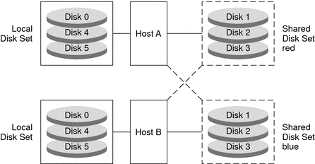

|
|||||||||
|
1. Getting Started With Solaris Volume Manager 2. Storage Management Concepts 3. Solaris Volume Manager Overview 4. Solaris Volume Manager for Sun Cluster (Overview) 5. Configuring and Using Solaris Volume Manager (Scenario) 8. RAID-0 (Stripe and Concatenation) Volumes (Overview) 9. RAID-0 (Stripe and Concatenation) Volumes (Tasks) 10. RAID-1 (Mirror) Volumes (Overview) 11. RAID-1 (Mirror) Volumes (Tasks) 12. Soft Partitions (Overview) 16. Hot Spare Pools (Overview) Guidelines for Working With Disk Sets Asynchronous Shared Storage in Disk Sets 20. Maintaining Solaris Volume Manager (Tasks) 21. Best Practices for Solaris Volume Manager 22. Top-Down Volume Creation (Overview) 23. Top-Down Volume Creation (Tasks) 24. Monitoring and Error Reporting (Tasks) 25. Troubleshooting Solaris Volume Manager (Tasks) A. Important Solaris Volume Manager Files B. Solaris Volume Manager Quick Reference |
Solaris Volume Manager Disk Set AdministrationUnlike local disk set administration, you do not need to manually create or delete disk set state databases. Solaris Volume Manager places one state database replica (on slice 7) on each disk across all disks in the disk set, up to a maximum of 50 total replicas in the disk set. When you add disks to a disk set, Solaris Volume Manager automatically creates the state database replicas on the disk set. When a disk is accepted into a disk set, Solaris Volume Manager might repartition the disk so that the state database replica for the disk set can be placed on the disk (see Automatic Disk Partitioning). A file system that resides on a volume in a disk set normally is not mounted automatically at boot time with the /etc/vfstab file. The necessary Solaris Volume Manager RPC daemons (rpc.metad and rpc.metamhd) do not start early enough in the boot process to permit this. Additionally, the ownership of a disk set is lost during a reboot. Do not disable the Solaris Volume Manager RPC daemons in the /etc/inetd.conf file. They are configured to start by default. These daemons must remain enabled to allow Solaris Volume Manager to use its full functionality. When the autotake feature is enabled using the -A option of the metaset command, the disk set is automatically taken at boot time. Under these circumstances, a file system that resides on a volume in a disk set can be automatically mounted with the /etc/vfstab file. To enable an automatic take during the boot process, the disk set must be associated with only a single host, and must have the autotake feature enabled. A disk set can be enabled either during or after disk set creation. For more information on the autotake feature, see Autotake Disk Sets. Note - Although disk sets are supported in single-host configurations, they are often not appropriate for “local” (not dual-connected) use. Two common exceptions are the use of disk sets to provide a more manageable namespace for logical volumes, and to more easily manage storage on a Storage Area Network (SAN) fabric (see Scenario--Disk Sets. Disk sets can be created and configured by using the Solaris Volume Manager command-line interface (the metaset command) or the Enhanced Storage tool within the Solaris Management Console. After disks are added to a disk set, the disk set can be reserved (or taken) and released by hosts in the disk set. When a disk set is reserved by a host, the other host in the disk set cannot access the data on the disks in the disk set. To perform maintenance on a disk set, a host must be the owner of the disk set or have reserved the disk set. A host takes implicit ownership of the disk set by putting the first disk into the set. Disk sets, including disk sets created on a different system, can be imported into existing Solaris Volume Manager configurations using the metaimport command. Reserving a Disk SetBefore a host can use the disks in a disk set, the host must reserve the disk set. There are two methods of reserving a disk set:
Note - If a disk has been determined unexpectedly not to be reserved (perhaps because another host using the disk set forcibly took the disk), the host will panic. This behavior helps to minimize data loss which would occur if two hosts were to simultaneously access the same disk. For more information about taking or reserving a disk set, see How to Take a Disk Set. Releasing a Disk SetReleasing a disk set can be useful when you perform maintenance on the physical disks in the disk set. When a disk set is released, it cannot be accessed by the host. If both hosts in a disk set release the set, neither host in the disk set can access the disks in the disk set. For more information about releasing a disk set, see How to Release a Disk Set. Importing a Disk SetBeginning with the Solaris 9 9/04 release, the metaimport command enables you to import disk sets, including replicated disk sets, into existing Solaris Volume Manager configurations that have device ID support in the disk set. You can also use the metaimport command to report on disk sets that are available for import. Replicated disk sets are created using remote replication software. In order for a replicated disk set to be imported with the metaimport command, the slice containing the state database replica for each disk in the disk set must also be replicated onto the same slice of the replicated disk set. This corresponds to slice 7 for non-EFI disks and slice 6 for EFI disks. Before replicating a disk set, make sure that the disk configurations of the data to be replicated and of the remote site match. This step ensures that both the state database replica and the data are replicated accurately. The metaimport command also does not import a disk in a disk set if the disk does not contain a volume or a state database replica. This scenario occurs if a volume or a state database replica have not been added to a disk or have been deleted from a disk. In this case, when you import the disk set to another system, you would find that the disk is missing from the disk set. For example, maximum of 50 state database replicas are allowed per Solaris Volume Manager disk set. If you have 60 disks in a disk set, the 10 disks that do not contain a state database replica must contain a volume in order to be imported with the disk set. For tasks associated with importing a disk set, see Importing Disk Sets. Note - In a Sun Cluster environment, the metaimport command is not available. Automatic Disk PartitioningWhen you add a new disk to a disk set, Solaris Volume Manager checks the disk format. If necessary, Solaris Volume Manager repartitions the disk to ensure that the disk has an appropriately configured slice 7 with adequate space for a state database replica. The precise size of slice 7 depends on the disk geometry. However, the size will be no less than 4 Mbytes, and probably closer to 6 Mbytes (depending on where the cylinder boundaries lie). By default, Solaris Volume Manager places one state database replica on slice 7. You can increase the default size of slice 7 or decrease the size of the state database replica in order to fit more than one state database replica onto the slice. Note - The minimal size for slice 7 will likely change in the future, based on a variety of factors, including the size of the state database replica and information to be stored in the state database replica. The default size for a state database replica in a multi-owner disk set is 16 Mbytes. For use in disk sets, disks must have a slice 7 that meets these criteria:
If the existing partition table does not meet these criteria, Solaris Volume Manager repartitions the disk. A small portion of each drive is reserved in slice 7 for use by Solaris Volume Manager. The remainder of the space on each drive is placed into slice 0. Any existing data on the disks is lost by repartitioning. Tip - After you add a drive to a disk set, you may repartition it as necessary, with the exception that slice 7 is not altered in any way. The following output from the prtvtoc command shows a disk before it is added to a disk set. [root@lexicon:apps]$ prtvtoc /dev/rdsk/c1t6d0s0
* /dev/rdsk/c1t6d0s0 partition map
*
* Dimensions:
* 512 bytes/sector
* 133 sectors/track
* 27 tracks/cylinder
* 3591 sectors/cylinder
* 4926 cylinders
* 4924 accessible cylinders
*
* Flags:
* 1: unmountable
* 10: read-only
*
* First Sector Last
* Partition Tag Flags Sector Count Sector Mount Directory
0 2 00 0 4111695 4111694
1 3 01 4111695 1235304 5346998
2 5 01 0 17682084 17682083
3 0 00 5346999 4197879 9544877
4 0 00 9544878 4197879 13742756
5 0 00 13742757 3939327 17682083The above output shows that the disk does not contain a slice 7. Therefore, when the disk is added to a disk set, Solaris Volume Manager repartitions the disk. The following output from the prtvtoc command shows the disk after it is added to a disk set. [root@lexicon:apps]$ prtvtoc /dev/rdsk/c1t6d0s0
* /dev/rdsk/c1t6d0s0 partition map
*
* Dimensions:
* 512 bytes/sector
* 133 sectors/track
* 27 tracks/cylinder
* 3591 sectors/cylinder
* 4926 cylinders
* 4924 accessible cylinders
*
* Flags:
* 1: unmountable
* 10: read-only
*
* First Sector Last
* Partition Tag Flags Sector Count Sector Mount Directory
0 0 00 10773 17671311 17682083
7 0 01 0 10773 10772
[root@lexicon:apps]$ The output shows that the disk has been repartitioned to include a slice 7 that starts at cylinder 0 and that has sufficient space for the state database replica. If disks you add to a disk set each have an acceptable slice 7, they are not reformatted. Note - If you have disk sets that you upgraded from Solstice DiskSuite software, the default state database replica size on those sets is 1034 blocks, not the 8192 block size from Solaris Volume Manager. Also, slice 7 on the disks that were added under Solstice DiskSuite software are correspondingly smaller than slice 7 on disks that were added under Solaris Volume Manager. Disk Set Name RequirementsDisk set volume names are similar to other Solaris Volume Manager component names. However, the disk set name is included as part of the name. For example, volume path names include the disk set name after /dev/md/ and before the actual volume name in the path. The following table shows some example disk set volume names. Table 18-1 Example Volume Names for Disk Sets
Similarly, hot spare pools have the disk set name as part of the hot spare name. Example—Two Shared Disk SetsFigure 18-1 shows an example configuration that uses two disk sets. In this configuration, Host A and Host B share the disk sets red and blue. They each have their own local disk set, which is not shared. If Host A fails, Host B can take over control of Host A's shared disk set, the disk set red. Likewise, if Host B fails, Host A can take control of Host B's shared disk set, the disk set blue. Figure 18-1 Disk Sets Example |
||||||||
|